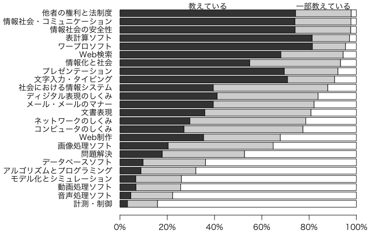

CECのページにある報告書『「情報大航海時代」における制度的課題に関する高等学校等における情報教育の実態調査 実施報告書』（2009年3月，財団法人コンピュータ教育開発センター）のp.29のグラフはごたごたしているので，p.37の表から普通科・総合学科だけを抜き出して描き直してみました。
まずは高校の普通科・総合学科の教科「情報」で教えている内容のデータ（スペース区切りテキスト）です：
教えている 一部教えている
文字入力・タイピング 70.9 19.9
Web検索 68.1 26.3
ワープロソフト 81.4 14.0
表計算ソフト 81.3 15.8
データベースソフト 9.8 26.4
画像処理ソフト 20.4 44.4
音声処理ソフト 4.6 17.7
動画処理ソフト 6.8 18.9
Web制作 35.4 32.4
メール・メールのマナー 39.5 42.6
文書表現 35.9 44.9
プレゼンテーション 69.5 22.7
ディジタル表現のしくみ 41.1 42.7
ネットワークのしくみ 29.6 49.0
コンピュータのしくみ 27.1 50.3
アルゴリズムとプログラミング 8.9 23.2
計測・制御 3.2 12.7
モデル化とシミュレーション 6.7 19.3
問題解決 17.9 34.8
情報化と社会 54.9 38.4
社会における情報システム 39.5 48.4
他者の権利と法制度 74.3 23.5
情報社会・コミュニケーション 74.0 23.7
情報社会の安全性 74.1 23.5
Rでこのデータのグラフを描くための初期設定です：
# par(family="HiraKakuProN-W3") # Macのフォント指定
par(las=1) # 縦軸の字も横向きに
par(mgp=c(2,0.8,0)) # 目盛り位置調整
par(mar=c(5,14,4,2)+0.1) # マージン: デフォルト c(5,4,4,2)+0.1
このページの最初のデータをクリップボードにコピーして，次のどちらかを打ち込みます：
X = read.table(pipe("pbpaste")) # Mac（非X11環境）
X = read.table("clipboard") # 上記以外
教えている＋一部教えているの順に並べた棒グラフを描きます：
X = transform(X, 教えていない=100-X[,1]-X[,2])
o = order(X[,1]+X[,2])
barplot(t(as.matrix(X[o,])), horiz=TRUE, xlim=c(0,100))
もうちょっと凝ったところ：
barplot(t(as.matrix(X[o,])), horiz=TRUE, xlim=c(0,100),
col=gray(c(0.2,0.8,1)), xaxt="n")
t = seq(0,100,20)
axis(1, t, paste(t, "%", sep=""))
z = o[length(o)]
mtext("教えている", at=X[z,1]/2, line=-1)
mtext("一部教えている", at=X[z,1]+X[z,2]/2, line=-1)
次のようになりました：

Last modified: